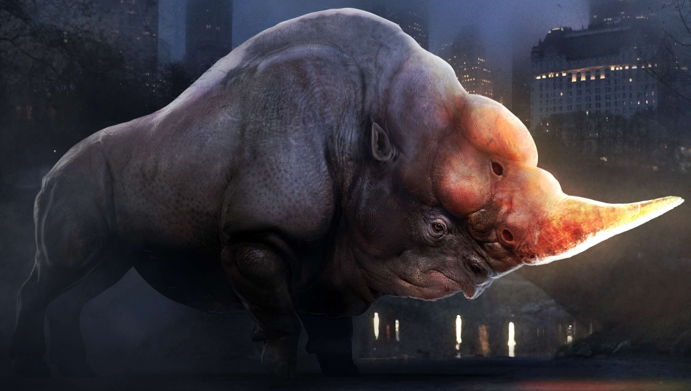

뒤로 가기

아프리카에 서식하며 두꺼운 회색 가죽과 커다란 덩치를 지닌 동물이다.
두꺼운 가죽은 거의 모든 마법과 저주를 막으며 코에 달려있는 뿔은 날카로운 데다 폭발하는 액체가 담겨 있다.
뿔을 박아넣음으로써 마치 주사기처럼 폭발하는 액체를 안에 주사해넣을 수 있다. 덕분에 짝짓기 철에 수컷끼리 싸우다 폭발하는 일이 빈번해 그 수가 희귀하다고 한다.
데미가이즈, 빌리위그 등과 함께 탈출해서 거대한 파괴 흔적을 남긴다. 얼어붙은 호수 아래로 광채를 뿜으며 지나가는 장면이 나온다.
센트럴 파크로 가던 뉴트와 제이콥이 동물원에서 찾아내며 이때 하마를 상대로 짝짓기를 시도하고 있었다.